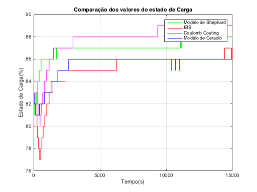
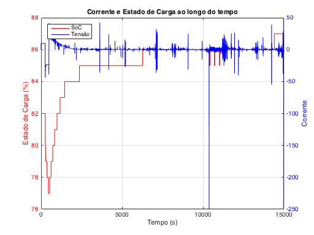
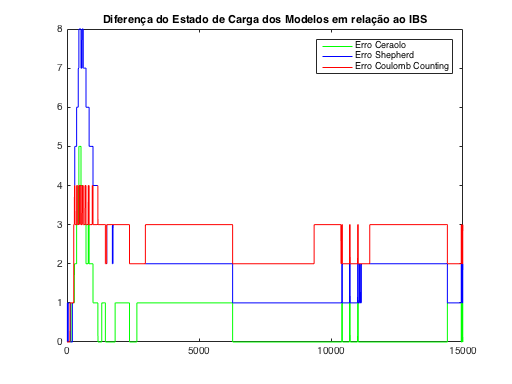

clear all; clc; close all;
cd('C_Cap_72_Bateria_A_Amostra_3');
load('Bat_A_72_Amostra_3.mat');
load('Ceraolo_SoC.mat');
load('Shephard_SoC_Simulado.mat');
N = 15000;
CAPACIDADE = 60;
Bat_CC = zeros(N,1);
Bat_CC(1) = Est_Carga(1);
cte = 100/(CAPACIDADE*3600);
for i=2:1:N
Bat_CC(i) = Bat_CC(i-1) + cte*Corrente(i);
end
Quant = length(Ceraolo_SoC.Data)/N;
y_af_Ceraolo = uint8(Ceraolo_SoC.Data);
y_Ceraolo = zeros(N, 1);
for i=0:1:(N-1)
y_Ceraolo(i+1) = mean(y_af_Ceraolo(uint32(i*Quant+1):uint32(Quant*(i+1))));
end
Quant = length(Shephard_SoC_Simulado.Data)/N;
y_af_Shephard = uint8(Shephard_SoC_Simulado.Data);
y_Shephard = zeros(N, 1);
for i=0:1:(N-1)
y_Shephard(i+1) = mean(y_af_Shephard(uint32(i*Quant+1):uint32(Quant*(i+1))));
end
figure;
plot(y_Shephard, 'g','LineWidth',1);
hold on;
plot(Est_Carga(1:15000), 'r','LineWidth',1);
hold on;
plot(uint8(Bat_CC), 'm','LineWidth',1);
hold on;
plot(y_Ceraolo, 'b','LineWidth',1);
legend('Modelo de Shephard', 'IBS', 'Coulomb Couting', 'Modelo de Ceraolo' );
ylabel('Estado de Carga(%)');
xlabel('Tempo(s)');
title('Comparação dos valores do estado de Carga');
grid on;
figure;
time = 1:1:N;
[AX, H1, H2] = plotyy(time, Est_Carga(time), time, Corrente(time));
set(H1,'Color','r','LineWidth',1);
set(H2,'Color','b','LineWidth',1);
set(AX(1),'YColor','r');
set(AX(2),'YColor','b');
set(get(AX(1),'Ylabel'),'String','Estado de Carga (%)');
set(get(AX(2),'Ylabel'),'String','Corrente');
leg = legend('SoC','Tensão', 'Location', 'NorthWest');
set(leg);
set(get(AX(1),'Xlabel'),'String','Tempo (s)');
set(get(AX(2),'Ylabel'),'String','Corrente');
title('Corrente e Estado de Carga ao longo do tempo');
grid on;
Quantidade = length(Corrente);
EMQ_1 = abs(y_Ceraolo - Est_Carga);
EMQ_2 = abs(y_Shephard - Est_Carga);
EMQ_3 = abs(uint32(Bat_CC) - uint32(Est_Carga));
figure;
plot(1:1:15000, EMQ_1,'g','LineWidth',1);
hold on;
plot(1:1:15000, EMQ_2,'b','LineWidth',1);
hold on;
plot(1:1:15000, EMQ_3,'r','LineWidth',1);
legend('Erro Ceraolo', 'Erro Shepherd', 'Erro Coulomb Counting');
title('Diferença do Estado de Carga dos Modelos em relação ao IBS');
EMQ_1 = sum(EMQ_1.^2)/length(EMQ_1);
EMQ_2 = sum(EMQ_2.^2)/length(EMQ_2);
EMQ_3 = sum(EMQ_3.^2)/length(EMQ_3);
fprintf('Erro Médio Quadrático - Ceraolo = %6.2f\n', EMQ_1);
fprintf('Erro Médio Quadrático - Shepherd = %6.2f\n', EMQ_2);
fprintf('Erro Médio Quadrático - Coulomb Counting = %6.2f\n', EMQ_3);
Box: {'on' 'off'}
BusyAction: {'queue' 'cancel'}
ButtonDownFcn: {}
Children: {}
Color: {1x0 cell}
CreateFcn: {}
DeleteFcn: {}
EdgeColor: {1x0 cell}
FontAngle: {'normal' 'italic'}
FontName: {}
FontSize: {}
FontWeight: {'normal' 'bold'}
HandleVisibility: {'on' 'callback' 'off'}
HitTest: {'on' 'off'}
Interpreter: {'none' 'tex' 'latex'}
Interruptible: {'on' 'off'}
LineWidth: {}
Location: {1x19 cell}
Orientation: {'horizontal' 'vertical'}
Parent: {}
PickableParts: {'visible' 'none' 'all'}
Position: {}
Selected: {'on' 'off'}
SelectionHighlight: {'on' 'off'}
String: {}
Tag: {}
TextColor: {1x0 cell}
UIContextMenu: {}
Units: {1x6 cell}
UserData: {}
Visible: {'on' 'off'}
Erro Médio Quadrático - Ceraolo = 0.80
Erro Médio Quadrático - Shepherd = 5.11
Erro Médio Quadrático - Coulomb Counting = 7.21
  